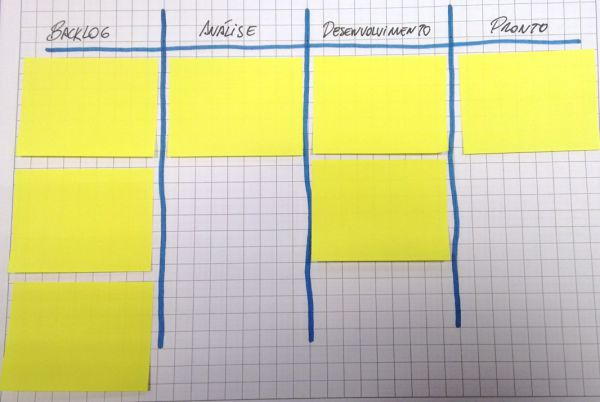

Considerando que você usa Kanban no seu projeto, então é bem provável que já exista um quadro para representar todas as atividades do seu time. E WIP (ou Work In Progress) é uma informação bem simples de ser retirada desse quadro.
Tomamos o quadro abaixo como exemplo. Cada coluna neste quadro representa uma etapa do processo de desenvolvimento. Ou seja, um item de trabalho pode passar por fases como Backlog, Análise, Desenvolvimento e Pronto. Os itens que estão presentes em cada coluna, ou em cada etapa do processo, são considerados WIP.

Ainda no quadro da figura acima, pode-se dizer que existem 3 itens de trabalho em andamento, desconsiderando a coluna de Backlog, que representa itens que ainda serão trabalhados, e também a coluna Pronto, que contém itens que não necessitam de mais nenhuma intervenção. Isso é tudo que está no sistema. Uma maneira adicional é medir o WIP em cada etapa do processo. Neste caso, teríamos 2 itens de trabalho na etapa de desenvolvimento e um item de trabalho na etapa de análise.
Limitando o Work In Progress
Uma das maneiras de tornar mais eficiente o trabalho de uma equipe é limitar o fluxo que entra no sistema. E isso nada mais é do que ser coerente a capacidade deste sistema. Não adianta querer enfiar um elefante através de um furo de uma agulha, passar um camelo debaixo da porta, abraçar o mundo com as pernas, entre outros ditos que já diziam os antepassados.
Abaixo listo alguns outros motivos para pensar em criar limites para o trabalho em andamento:
Mais acabativa: Uma das vantagens na limitação do máximo de trabalho que está em progresso é contribuir para uma cultura de "pronto", na qual as pessoas passam a se preocupar em acabar mais do que começar. Vamos começar a terminar, ao invés de começar a acabar. Esse foi um dos maiores ensinamentos que eu tive quando iniciei nesse mundo Kanban há alguns bons anos atrás, escutando o famoso Rodrigo Yoshima. E, acreditem, começar a começar é muito fácil.
Visualizando bloqueios: A ocorrência de impedimentos de trabalho é um dos fatores que podem contribuir para aumentar o WIP. É comum optar por trabalhar em uma coisa nova e deixar aquele bloqueio lá, criando raízes. Dar visibilidade a isso pode ajudar o time a se juntar para remover o impedimento antes de começar algo novo.
Não temos nada para trabalhar: limitar o mínimo de trabalho em andamento também é uma prática legal. Por exemplo, definir a quantidade mínima de itens prontos para desenvolvimento ou na coluna em análise. Dessa maneira, busca-se garantir que o time de desenvolvimento sempre tenha algo para trabalhar.
São apenas alguns pontos, mas já ajudam a ter uma ideia da relevância do assunto. Uma sugestão pra começar é definir que cada pessoa do time (ou cada par, dependendo da forma como sua equipe está organizada) tenha somente um item de trabalho ao mesmo tempo. Deixar claro quais são os limites também é um passo importante, como anotar no quadro ou perto da coluna da qual o limite será inserido.